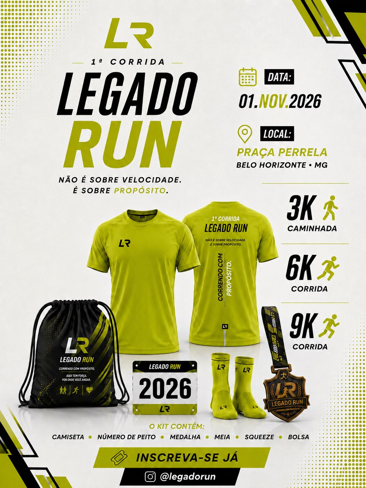

Convite LEGADO RUN
O vídeo fica em destaque, mas sem ocupar a primeira impressão inteira do site.

Movimento • comunidade • propósito
Um movimento de pessoas que escolheram correr, caminhar, evoluir e construir algo que vai além dos quilômetros.
1ª corrida • 01.11.2026Um lugar para fazer parte
Talvez você nunca tenha corrido. Talvez esteja tentando começar. Talvez já corra há anos.
Não importa. No LEGADO RUN existe espaço para quem quer dar o primeiro passo e para quem quer descobrir até onde consegue chegar. Aqui, ninguém precisa fazer o caminho sozinho.
Existe lugar para você aqui.
Isso já está acontecendo
O vídeo fica em destaque, mas sem ocupar a primeira impressão inteira do site.
Encontros para quem quer começar, voltar ou evoluir.
Uma comunidade para caminhar junto, sem precisar chegar pronto.
O álbum oficial reúne fotos e vídeos do movimento.
Ver fotos e vídeosPróximo treino
Um encontro para caminhar, correr, conhecer pessoas e construir constância. Quando a próxima data for confirmada, este bloco será atualizado com dia, horário, local e mapa.
Eu vou no próximoQuem vive, entende
Para quem chegou sem experiência e encontrou um ponto de partida.
Para relatos de saúde, disciplina e constância construídas no caminho.
Para histórias de amizade, fé, comunidade e propósito.
LEGADO RUN
Começar. Movimentar. Evoluir.
Encontrar pessoas. Construir amizades. Caminhar junto.
Entender que evolução não termina em você.
Deixar marcas positivas por onde passar.
Você não precisa ser corredor para começar. Mas talvez depois de começar você descubra que é.
Primeira vez?
Roupa confortável, água e disposição para começar no seu ritmo.
O grupo se encontra, aquece, caminha ou corre e encerra junto.
Existe espaço para quem caminha, para quem começa e para quem já corre.
Sim. O movimento nasce para receber pessoas.
A comunidade
Corrida, disciplina, saúde, família, fé, propósito e comunidade. Este será o espaço vivo para fotos, vídeos, histórias e conteúdos oficiais do LEGADO RUN.
Entrar na comunidade visualBaixe o aplicativo
Acesse treinos, eventos, comunidade e experiências do movimento LEGADO RUN em um só lugar.
01.11.2026
Você vai poder dizer: eu estava na primeira.
Meu primeiro passo.
Quero ir além.
Quero me superar.
Local
A arena e a largada serão realizadas na Avenida dos Andradas, em Belo Horizonte/MG. A estrutura prevista contempla palco, tendas, alimentação, banheiros, ambulância e médicos, guarda-volumes e pontos de hidratação.

Kit
Escolha entre kit simples ou kit completo com camisa oficial.
Experiência do evento
Faltam para a 1ª corrida
Correr a primeira
O valor é o mesmo para 3 km, 6 km e 9 km.
Parceiros
O evento será divulgado no Instagram oficial do LEGADO RUN, Instagram do idealizador e dos parceiros, site oficial, landing pages do evento, grupos e listas de transmissão no WhatsApp, assessorias e grupos de corrida, materiais impressos, banners, vídeos e conteúdos produzidos pelos participantes.
A campanha também estará na Ticket Sports, uma das maiores plataformas de inscrições e eventos esportivos do Brasil, com divulgações nas plataformas, Federação Mineira de Atletismo, encontros preparatórios e cobertura fotográfica e audiovisual antes, durante e após a corrida.
Quero ser patrocinadorDo treino para o feed
A integração com posts recentes será feita por API oficial quando estiver configurada. Enquanto isso, o site usa apenas conteúdo local selecionado e aprovado, além da biblioteca oficial no Google Fotos.
Não acompanhe de longe
Receba informações sobre treinos, encontros, corrida, novidades, conteúdos e experiências.
Fazer parte